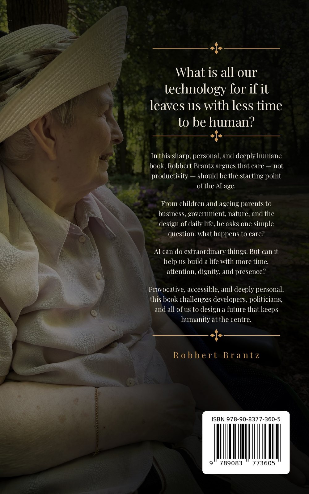

Why care must be at the core of the age of artificial intelligence
Robbert Brantz
A sharp, personal and deeply humane case for putting care — not productivity — at the starting point of the AI age. Twenty-two short chapters on what happens to care when everything around us is automated. Written in hope, not in fear.
What is all our technology for if it leaves us with less time to be human?
In this sharp, personal, and deeply humane book, Robbert Brantz argues that care — not productivity — should be the starting point of the AI age.
From children and ageing parents to business, government, nature, and the design of daily life, he asks one simple question: what happens to care?
AI can do extraordinary things. But can it help us build a life with more time, attention, dignity, and presence?
Provocative, accessible, and deeply personal, this book challenges developers, politicians, and all of us to design a future that keeps humanity at the centre.
Where it came from
For 36 years I watched organisations digitise from the inside — a bank, a knowledge institute for education, financial services, healthcare, boardrooms and street level. The technology always changed. The pattern never did. Somewhere between the strategy deck and the person at the counter, the human being falls out of the process. Nobody decides it. It just happens, one efficiency at a time.
Then it happened to my own mother. She had dementia, she was far too kind to complain — and so, to a system built around signals and complaints, she effectively did not exist. That is not only a healthcare story. It is the same story as the bank that closed its branches, the customer service line that no longer has a line, the government desk that became a portal, the shop that became a screen. Care disappears first, and only much later do we notice what it was holding up.
So the book makes one argument, plainly: care must become a design requirement of artificial intelligence — not an ethics chapter at the back, not a compliance checkbox, but a requirement in the brief, the same way security and performance are. It is short on purpose: twenty-two chapters, around fifty pages, written to be read in one sitting and argued with afterwards. Written in hope, not in fear.
Why a father wrote this
I am a father, and recently I became a grandfather. That changes the unit you count in. You stop counting in quarters and start counting in generations — and once you do, 36 years of digitisation looks different.
In those 36 years I watched handwritten forms become typed forms, typed forms become websites, websites become apps, and apps become systems that now write themselves. Every single step made something faster. Almost none of them made anything more caring. And because nobody ever decided that out loud, nobody noticed it was happening.
You feel it at both ends of a family at once. My children grew up inside portals, helpdesks that answer with a menu, and queues that no longer have a queue. My parents grew old inside that same machinery — and my mother, who never complained, disappeared into it completely. Same system, one generation apart, and the same thing missing from it.
In all those years of building things that go faster, the one thing we forgot to build in was care.
That is the sentence this whole book hangs on. Not because technology is the enemy — I build with it every day and I am glad it exists. But because the next thing we are automating is the part where one human being pays attention to another. My children will live inside whatever we decide about that now. So will their children. That is not a policy question. It is a family one.

The back cover.
Not an AI book
It is a book about automation everywhere — banks, customer service, government desks, retail, schools. AI is only the fastest chapter of a much older story.
Hope, not fear
No doom, no hype. The technology is extraordinary. The question is whose interests are designed into it before it scales.
One concrete demand
Make care a design requirement. Everything else in the book follows from that single, testable idea.
Get the book
The ebook is published by Zonder Stropdas Company and releases on 1 October 2026. From that date it is distributed to the usual ebook stores — Amazon Kindle, Kobo, Apple Books, bol.com, Barnes & Noble and Bookshop.org among them — and to library apps such as OverDrive, cloudLibrary, Hoopla and BorrowBox. Searching the title or the ISBN in whichever one you already use will find it.
Willing to take up the argument?
The reason for writing the book was to reach the people who actually build this technology, write the policy around it, and design the services it runs through — and a book only does that if it gets argued with.
So the offer is specific: if you are prepared to have that conversation, I will gladly send you the complete book. Agreeing with me or taking it apart — both are useful; disagreement is arguably more so. One line about where you stand is enough. No form, no mailing list.
Robbert Brantz never went to university and learned everything else. Thirty-six years of work, business and technology up close — from recording computer games onto a cassette tape as a child, to ABN AMRO, to two decades as an independent working for nearly every large financial institution in the Netherlands, to building AI-powered products today.
Along the way: interim director of the Dutch Platform for Independent Entrepreneurs, board director of the knowledge institute KIZO, co-author of the European study Future Working: The Rise of Europe's Independent Professionals, two-time award-winning solver at the open innovation platform InnoCentive — including, in 2012, a prize for a vision on large-scale human-machine teamwork, twelve years before the world caught up with the question.
He writes and builds under one banner: de mens in het proces — the human being in the process.
For interviews, review copies, podcast appearances or a talk on what 36 years of digitisation actually taught me — write to me directly. I answer my own email.